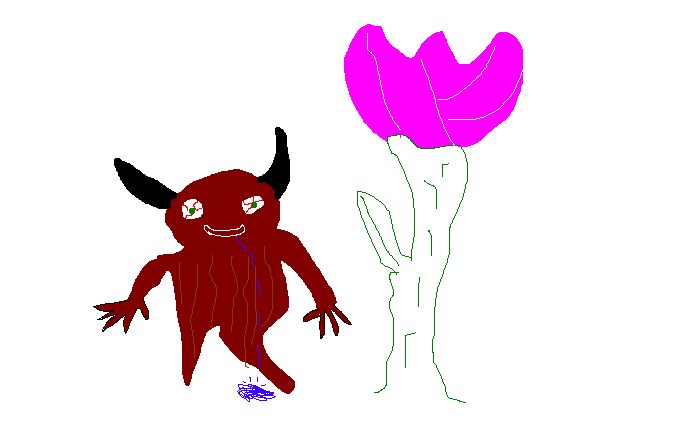

How I grew to love Goblins.
I live in a world run by Goblinsshe talks of them inseminating the flowers, plumping them in such fashion that not even the earths fattest bee could dream of
whilst this may be true, I am a young imbecile and don't give a damn about the harvest.
I want to live without seeing their gross skin that drips with external saliva
every time I step outside I can feel their gross bodys rubbing against the roses contorting and destroying their life
all this for it to bloom in a later day and have the process start all over again
it wasn't untill I shot one with my bow and arrow that I took him to the shade where I began
THE DISSECTION
soaking up it's gelatinous ooze dripping from it's ectoskeleton with a large rag, I was getting closer to the core
taking my homemade chainsaw to it's stomach I knew I would find their beauty that impregnates the flowers
once finally reaching the internal structure I began to sift
shoving my arm up to the elbow going for what felt like lifetimes into the lifless body
occasionally looking into its dead glassy eyes frightened that it would come back and ripp my Fucking head off
once I felt what I believed was the heart I grabbed it firmly and began to pull
awaiting the gorgeous voluptuos heart filled with what, Gold? Fæ? Lusty Nymphs?
as I pulled with all my might I lifted the heart to the air only to look at it, with the arteries swooping back to me in a parabolic fashion
I followed the entrails slowly inch by inch until I reached the point of entry:
my own chest.
Link to page 3 